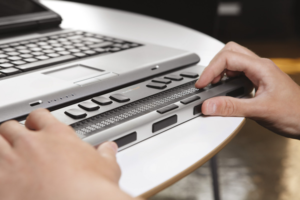
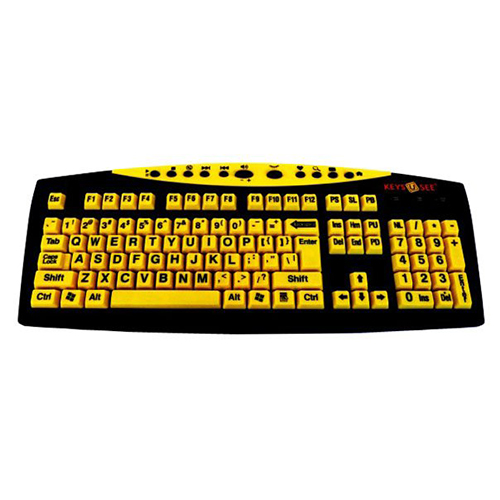
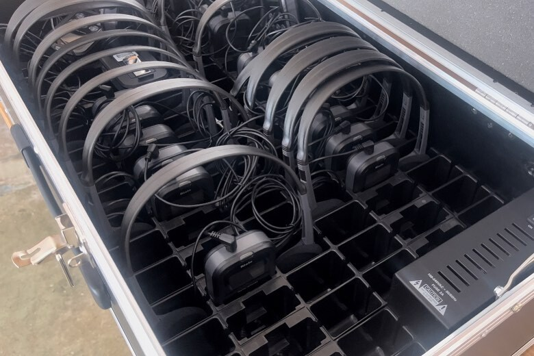

Tecnologias Assistivas
As tecnologias assistivas estão desempenhando um papel fundamental na superação de barreiras de acessibilidade. Alguns exemplos incluem:
Leitores de Tela
Esses programas convertem texto em fala, ajudando pessoas com deficiência visual a acessar conteúdo digital.
Teclados Adaptados
Teclados especializados ajudam pessoas com mobilidade reduzida a interagir com computadores e dispositivos móveis.
Dispositivos de Audiodescrição
Esses dispositivos descrevem o conteúdo visual em vídeos e filmes, tornando-os acessíveis para pessoas com deficiência visual.